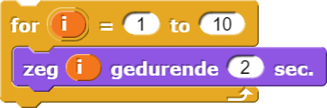
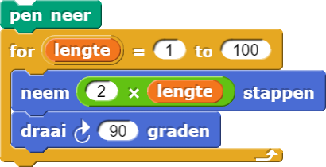
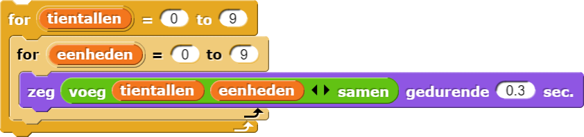
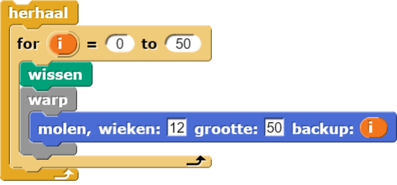
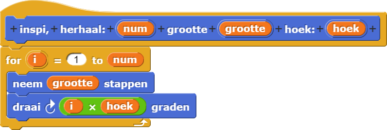

Lussen met een teller
Computer wetenschappers omschrijven zo'n structuur als "lussen", herhalen, of itereren. Opeenvolgen, selectie, en itereren zijn bouwblokken van algoritmes. Je wilt misschien nog even kijken bij Hoofdstuk 1 Les 2 Pagina 4: Spelersnamen leren voor een herinnering aan opeenvolgen en selecteren.
herhaalblok genereert een oneindige lus die voor altijd zal
blijven herhalen (lussen). Een oneindige lus kan soms het resultaat zijn van een bug, maar in sommige
interactieve programma's, wil je dat het programma blijft lopen totdat het gestopt wordt door de
gebruiker.Je hebt de onderstaande manieren gezien om een set opdrachten te herhalen:
- herhaalt dezelfde opdrachten voor altijd. (Deze heb je gebruikt om Alonzo te laten blijven bewegen in Hoofdstuk 1 Les 1 Pagina 6: Maak er een spel van.)
- herhaalt een specifiek aantal keer. (Deze heb je gebruikt om vormen te tekenen in Hoofdstuk 1 Les 3 Pagina 1: Beweging verkennen.)
Op deze pagina, ga je herhaallussen gebruiken om iets te laten herhalen
en deze herhalingen te tellen zodat je die teller kunt gebruiken om vormen te laten tekenen met
herhaalde patronen...


Je kunt
gebruiken om een variabele een naam te geven (hier, ) die elke herhaling telt, en je
kunt die
teller-variabele gebruiken in het herhalende script. Bijvoorbeeld, het herhaalblok laat je
lange scripts simplificeren zoals:
herhaalblok het script binnenin doorloopt,
verandert het de waarde van de variabele met 1, tellend vanaf het eerste invoer getal tot aan de tweede.

- Klik op het Document
 menu aan de bovenkant van het snap beeld en
selecteer "Importeer Tools."
menu aan de bovenkant van het snap beeld en
selecteer "Importeer Tools." - Bouw dit script waarin een sprite elk nummer van 1 tot 10 zegt.
- Bewerk het zodanig dat de sprite het zegt als 0, 2, 4, 6, 8, ... tot en met 30.
- Bespreek je oplossingen met iemand anders (of een ander paar).
- Experimenteer met spiralen.
- Bouw het onderstaande script en probeer het volgende:
Dit ontwerp kreeg de bijnaam "vierkant" want het is een vierkante spiraal.
 Zorg ervoor dat je kunt uitleggen waarom de vierkante spiraal naar buiten draait.
Zorg ervoor dat je kunt uitleggen waarom de vierkante spiraal naar buiten draait.- Probeer eens om de volgorde van de 100 en de 1 om te draaien in het
herhaalblok in het vierkante script. Wat is het resultaat hiervan? - Probeer eens om de draaihoek in het vierkant-script te veranderen in andere getallen zoals 92, 126, etc.
- Verander de invoer in
draaienneemom zo dicht mogelijk in de buurt te komen van een effen spiraal:
- Bouw het onderstaande script en probeer het volgende:
-
"H1L3-Squiral"

herhaal blok geeft je een standaard variabele, i (voor
index). Je kunt de naam van deze variabele veranderen door er op te klikken. Eenmaal veranderd,
sleep je het buiten en gebruik het net als elke andere variabele.- Open je H1L3-Molen project, en bouw een
genest, vierkantenblok dat eenherhaalgebruikt en jepolygoonblok om een geneste vierkant te tekenen. Geef het een invoer zodanig dat het een willekeurig aantal vierkanten zal tekenen die jij specificeert, met elk vierkant groter dan de voorgaande:
- Bouw
geneste polygonendie een bepaald aantal polygonen aanneemt en de aantal kanten voor de polygonen aanneemt. - Bouw een script dat 12 gewone polygonen tekent, elke met steeds één kant meer dan de voorgaande,
zoals hieronder weergegeven.

- Voorspel wat dit script doet voordat je het uitprobeert:

- Bouw een script dat aftelt van 100 tot 0, met stappen van 10 (dat is dus, 100, 90, 80, etc.).
- Vind een manier die het
forblok gebruikt om een vierkant te nesten op deze manier. Bouw je blok met twee invoeren die je laat specificeren hoeveel vierkanten het ontwerp bevat en hoeveel groter elk vierkant zal worden ten opzichte van de vorige.

- Hieronder zijn twee animaties die de
molencode gebruikt met invoer. Zoek uit hoe je voor jezelf zulke artistieke animaties kunt maken.


De onderstaande code kan je ideeën geven over hoe je animaties kunt maken. Zorg ervoor dat je alle
wacht0.5secblokken van jemolencode hebt verwijderd, zodat ze niets zullen vertragen. Hetwarpblok staat toe alles tegelijkertijd te laten gebeuren. -
 Dit blok is net als het
vierkante, maar in plaats van de invoer te veranderen naar
Dit blok is net als het
vierkante, maar in plaats van de invoer te veranderen naar neem, verandert het de invoer naardraai:
- Probeer te schetsen wat het zal tekenen met een hoek van 2.
- Bouw het dan, en probeer elk van deze tests:
Je kunt elke test stoppen met de "stop" knop ( ) als je er zeker van
bent
dat er niks nieuws gaat gebeuren, maar beslis dit nooit te snel!
) als je er zeker van
bent
dat er niks nieuws gaat gebeuren, maar beslis dit nooit te snel!
- Wat gebeurt er? Kun je een theorie bedenken die iets voorspelt over de vorm die het tekent
voor een specifieke hoek-invoer? (Klik hier alleen op als je een grote tip nodig hebt.)
Hint: Denk aan deelbaarheid.